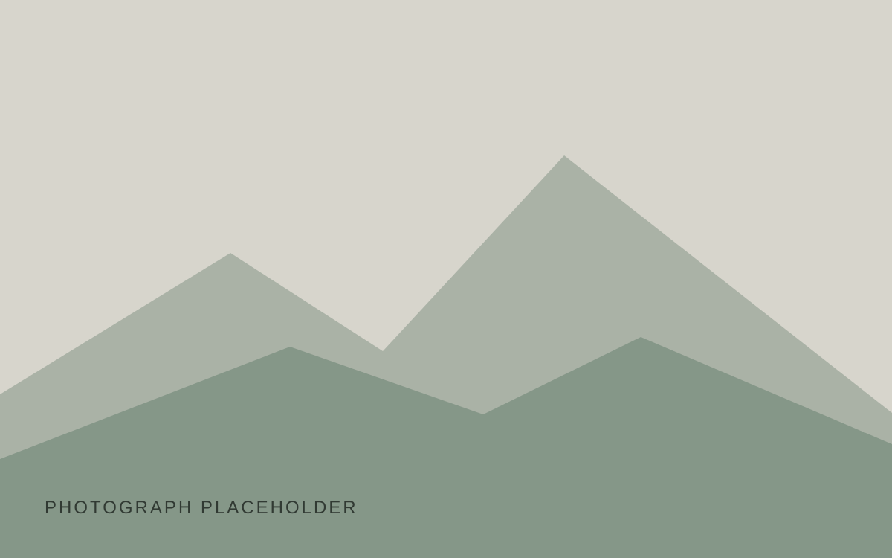
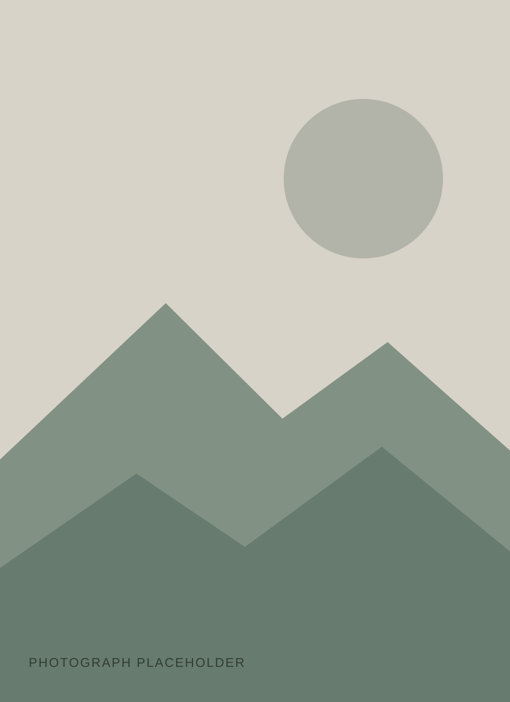

Placeholder image — no historical entry is represented.Thursday placeholderDate to comeLocation to comeOptional reflection.
Placeholder image — no historical entry is represented.Thursday placeholderDate to comeLocation to come